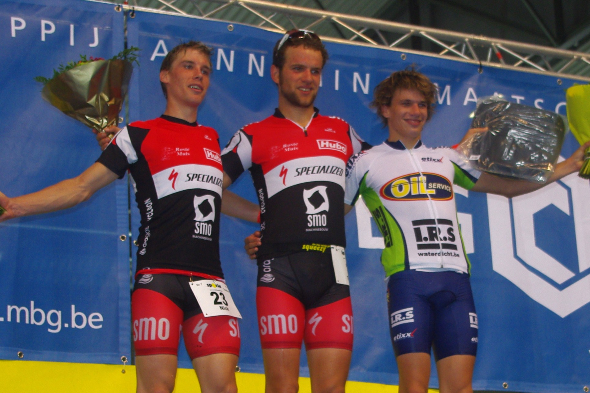
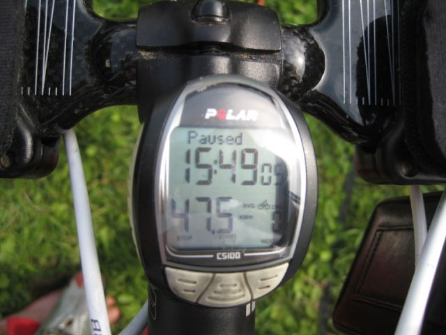

Zondag 20 augustus vond de 10e editie van de Mr. T Triatlon rond de Gentse Watersportbaan plaats. De jonge Ine Couckuyt en Tom Vander Hoogerstraete van SMO-Specialized kroonden zich tot winnaars in deze feesteditie. Een mooie organisatie, tropische temperaturen, veel volk en taart en champagne voor de finishers...
De uitslag kan jehier terugvinden. De foto's staan in het fotoalbum. Hieronder vind je een verslag terug van Nick Debusschere.
Vandaag stond de 'Mister T' 1/8ste triatlon op het programma. De weergoden waren ons gunstig gezind en het bleef heel de dag droog aan de topsporthal in Gent. Ik had samen met ploegmaat Tom VDH opgewarmd en deze kon moeilijk zijn ambitie verbergen. Het parcours was op ons lijf geschreven: 750m zwemmen in rechte lijn, 20 km fietsen rond de watersportbaan (4 rondjes van 5km zonder noemenswaardige bochten of moeilijkheden). Echt iets voor hardrijders dus. En 3 rondjes (1,8km) lopen met doorkomst in de topsporthal.
Voor de wedstrijd was ik toch even in paniek. Ik had met een schakelfout de ketting van mijn Specialized tijdritfiets scheefgetrokken. De noodoplossing was de ketting inkorten. (Dit betekende dat ik enkel op mijn 3 kleinste kroontjes kon rijden). Zodus met licht verhoogde hartslag naar de start gegaan.
De zwemstart was vrij onduidelijk toen iedereen uit het water moest voor het officiële startschot. Ik kwam snel uit het pak en kon tempo maken. Voor het water te verlaten kwam Tom ook nog sterk opzetten en zo verlieten we met 2 het water. De eerste achtervolgers met Maarten De Bolster volgden op 40".

Tom vloog door de 1ste wissel en ik kwam iets later na een mindere wisselbeurt. Op de fiets kon de 'Debusschere-Vander Hoogstraete sneltrein' het verschil maken. Doordat tijdritfietsen toegestaan waren samen met stayeren was het tempo verschroeiend. Het ging zo hard dat ik geen problemen had met mijn '3' versnellingen (53 - 11-12-13). Elke ronde liepen we uit op onze achtervolgers. Zo konden we met ong. 2'40" voorsprong het loopgedeelte aanvatten. Tom liep vrij snel weg en kon zo comfortabel de titel van 'Mister Triatlon' pakken. Ik had het moeilijker maar kon alsnog een opkomende Maarten Debolster afhouden.
De doortochten en de aankomst in de topsporthal waren echt uniek. Zo neemt SMO-Specialized vandaag plaats 1 en 2, vooral na een beresterk fietsnummer. Ook Ine Couckuyt wist haar titel in de Ladies triatlon voor het tweede jaar op rij te winnen met een knappe race. Ze domineerde de wedstrijd van start tot finish. Ine zwom zonder wetsuit en zo kon ze de schade na de wissel met de 13-jarige Amber Rombouts (dochter van Francoise Wellekens) beperken tot 20". Ze legde het volledige fietsonderdeel of met Amber in haar wiel en maakte het knap af in het lopen. Francoise Wellekens eindigde als tweede.
Proficiat aan alle iedereen en bedankt voor de aanmoedigingen!